스위치 · 컨트롤러 · 배선 한 세트
쓰던 순정 스위치에 배기 버튼을 이식하고 각인해 드립니다. 컨트롤러와 전용 잭바이잭 배선이 함께 가서 커넥터를 꽂는 방식으로 설치합니다. 설정은 PC 프로그램이나 안드로이드 앱으로 합니다.
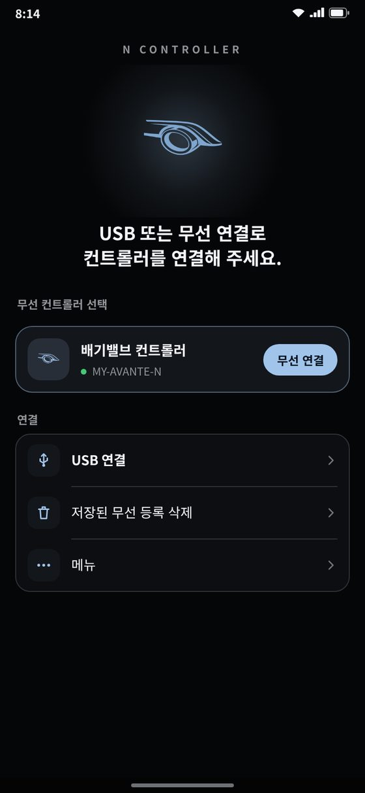
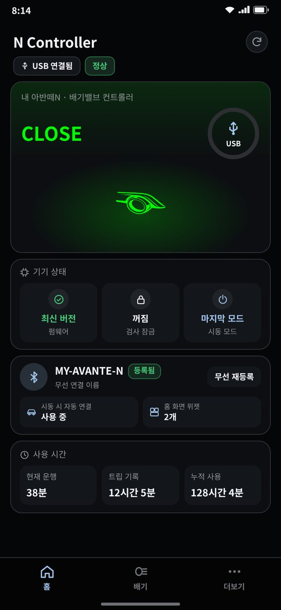
기본 구성
스위치 이식 + 각인 · 컨트롤러 · 전용 잭바이잭 배선
옵션
블루투스 모듈 (안드로이드 앱 무선 연결 · 위젯 · AUTO 모드 · 운행 기록)
커스텀 각인
차종
아반떼 N · 벨로스터 N · 코나 N
설정하는 방법
USB C to C 케이블 → Windows PC 프로그램 또는 안드로이드 앱
블루투스 모듈이 있으면 앱 · 위젯으로 무선
아이폰은 앱 미지원 · PC로 설정합니다
버튼 한 번에 다음 모드로
버튼을 짧게 누를 때마다 정해 둔 순서로 바뀝니다. 순정일 때는 스위치 LED가 꺼져 있고, 닫힘 · 열림은 정해 둔 색으로 켜집니다. 밸브는 약 1.5초 뒤에 움직여서, 그 사이에 한 번 더 누르면 다음 모드로 넘어갑니다.
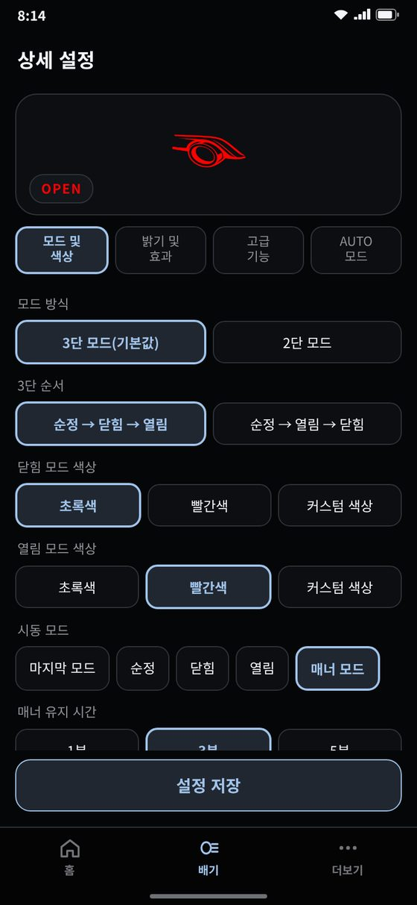
3단 모드 (기본)
순정 → 닫힘 → 열림
순정 → 열림 → 닫힘
2단 모드
순정 ↔ 닫힘 · 순정 ↔ 열림 · 닫힘 ↔ 열림
모드 색
닫힘 · 열림 각각 초록 · 빨강 · 커스텀 색. 기본은 닫힘 초록 · 열림 빨강.
모드 변경 사전 점멸
켜 두면 밸브가 움직이기 전에 바뀔 모드의 색으로 LED가 2번 깜빡여 알려 줍니다.
잘못 누름 막기
버튼을 2초 넘게 누르면 모드가 안 바뀝니다. 시동 직후 1초 동안은 버튼을 받지 않습니다.
앱에서 바꾸기
앱 홈의 그림을 눌러도 모드가 바뀝니다. 앱 · 위젯 · 버튼 어디서 바꿔도 서로 맞춰집니다.
시동 걸 때 시작할 모드
시동을 걸면 어떤 모드로 시작할지 정합니다. 매너모드는 닫힘으로 조용히 출발했다가 정해 둔 시간이 지나면 원래 모드로 돌아갑니다.
시동 모드
마지막 모드 · 순정 · 닫힘 · 열림 · 매너 모드 중에서 고릅니다.
매너모드
시동을 걸면 닫힘으로 시작하고 LED가 빠르게 맥동합니다. 1 · 3 · 5분이 지나거나 버튼을 누르면 마지막으로 쓰던 모드로 바로 돌아갑니다. 앱 · 위젯에는 「MANNER」로 보입니다.
이른 아침 · 주거지역
아파트 주차장이나 새벽 출발 때 시동을 조용히 걸 수 있습니다.
색 · 밝기 · 효과까지 내 스타일로
앱 화면 위쪽 그림이 지금 고른 색 · 밝기 · 효과대로 미리 움직여, 저장하기 전에 확인할 수 있습니다.
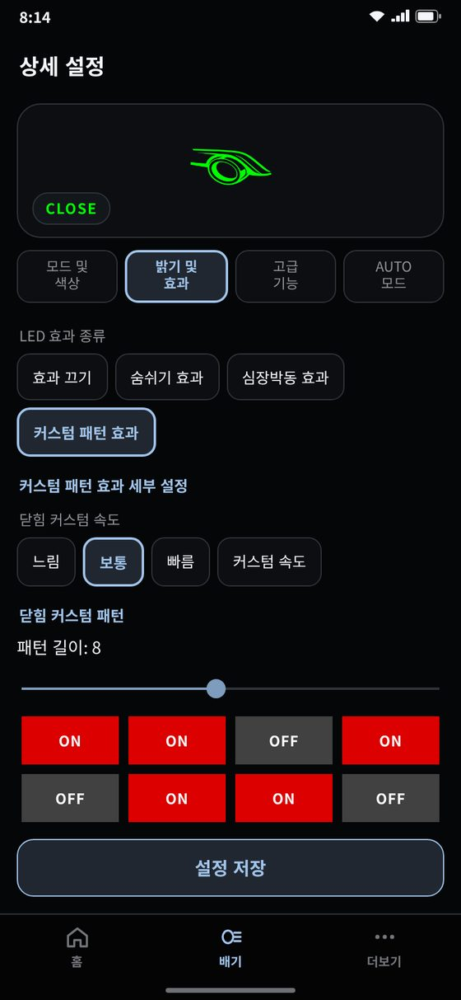
색
닫힘 · 열림 각각 초록 · 빨강 · 커스텀. 커스텀은 초록과 빨강을 섞는 비율(0~255)로 노랑 · 주황 같은 중간색을 만듭니다.
최대 밝기
닫힘 · 열림 각각 50 · 75 · 100%
효과
효과 끄기 · 숨쉬기(가장 어두울 때 10 · 30 · 50%) · 심장박동(단일 · 이중 박동) · 커스텀 패턴
커스텀 패턴
켜짐 · 꺼짐 칸을 1~16칸까지 직접 만들어 그 순서대로 깜빡입니다. 닫힘 · 열림 따로.
속도
느림 · 보통 · 빠름 · 커스텀 속도(0~100 세부 조절). 닫힘 · 열림 따로.
미등 밝기 연동
차 미등이 켜지면 LED가 어두워지고(가장 어둡게 약 3%), 미등을 끄면 원래 밝기로 돌아옵니다. 밤에 눈부시지 않습니다.
밸브 관리와 정기검사까지
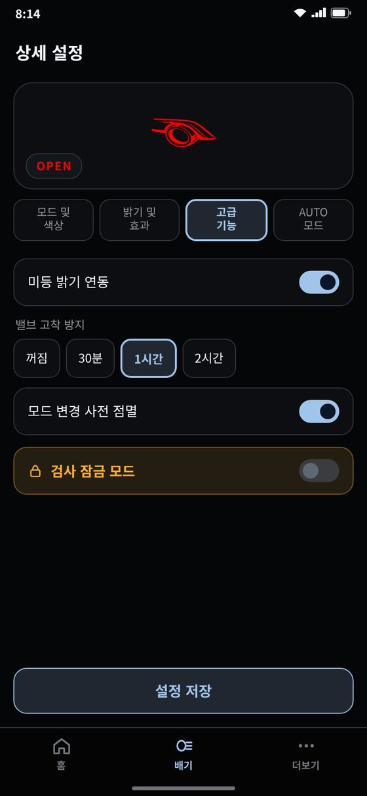
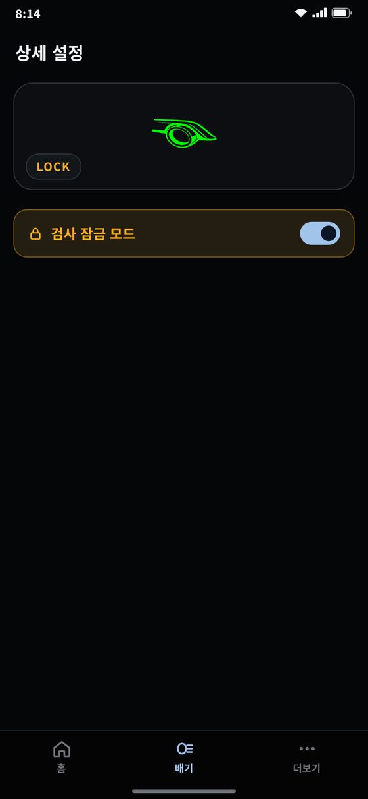
밸브 고착 방지
한 모드로 오래 달려도 30분 · 1시간 · 2시간마다 LED가 5번 깜빡인 뒤 밸브를 2초쯤 반대로 움직였다 돌아옵니다. 밸브가 굳지 않게 지켜 줍니다.
검사 잠금
정기검사 때 켜 두면 밸브는 닫힘으로 고정되고 LED는 꺼지며 버튼이 잠깁니다. 시동을 껐다 켜도 유지됩니다. 앱에서 켜고 끄거나, 버튼을 누른 채 시동을 걸어 1초.
설정 저장 확인
「설정 저장」을 누르면 바뀐 항목을 목록으로 보여 주고, 확인한 뒤에 기기에 저장합니다.
시동 때 자동 복구
시동 걸 때 전압이 순간 떨어져 멈춰도 약 2초 안에 스스로 다시 시작해 정해 둔 모드로 돌아갑니다.
버튼 보호
버튼이 30초 넘게 눌린 채로 걸려 있으면 그동안 버튼을 무시합니다.
지금 상태가 한 화면에
앱을 열면 지금 모드가 크게 보이고, 판 전체가 모드 색으로 은은하게 물듭니다. 아래 카드는 연결 방식과 AUTO 사용 여부에 따라 알맞게 바뀝니다.
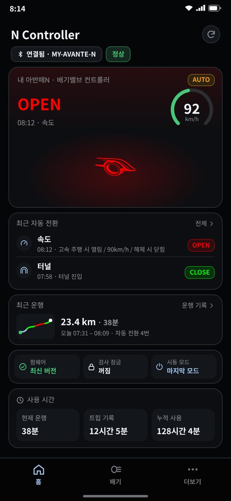
오른쪽 원
USB · 무선 연결 표시. 무선으로 AUTO를 쓰는 중이면 GPS 속도, 터널 안이면 「TUNNEL」.
기기 상태
펌웨어(최신 버전 · 업데이트 필요) · 검사 잠금 · 시동 모드. 업데이트가 필요하면 바로 업데이트 버튼이 뜹니다.
최근 자동 전환
AUTO가 언제 · 무엇 때문에 · 어떤 모드로 바꿨는지 최근 2개. 상태판에도 「08:12 · 속도」처럼 이유가 붙습니다.
최근 운행
지도 없이 그린 작은 경로(모드마다 색) · 거리 · 시간 · 자동 전환 횟수
사용 시간
현재 운행 · 트립 기록 · 누적 사용. 트립 기록은 차 트립에 맞춰 입력 · 초기화합니다.
새로고침
오른쪽 위 버튼으로 기기 정보를 다시 읽습니다.
USB 하나로 등록 · 업데이트 · 설정
컨트롤러를 USB C to C 케이블로 PC나 안드로이드 폰에 연결해 설정합니다. 처음 연결할 때 기기를 등록해 두면 업데이트 · A/S 안내를 받을 수 있습니다.
Windows PC 프로그램
기기 등록 · 펌웨어 업데이트 · 상세 설정. 설정하기 전에 LED 모양을 화면에서 미리 볼 수 있습니다.
안드로이드 앱 (USB)
PC가 없어도 휴대폰으로 등록 · 펌웨어 업데이트 · 설정을 다 할 수 있습니다.
업데이트
새 펌웨어가 나오면 앱 홈 「기기 상태」에 알려 주고 USB로 업데이트합니다. 앱 새 버전은 메뉴 「앱 업데이트」에 「새 버전 있음」으로 보입니다.
케이블 없이 연결, 시동 걸면 알아서
블루투스 모듈을 달면 케이블 없이 안드로이드 앱으로 연결합니다. 모드 변경 · 설정 저장을 무선으로 그대로 합니다.
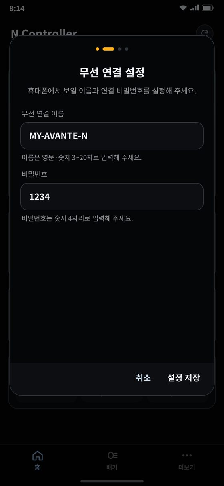
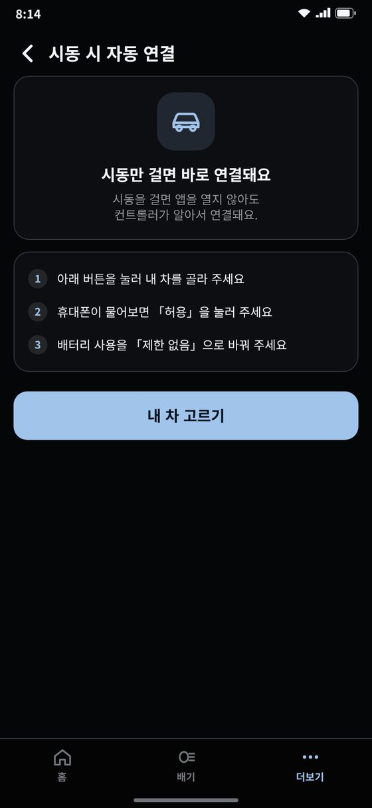
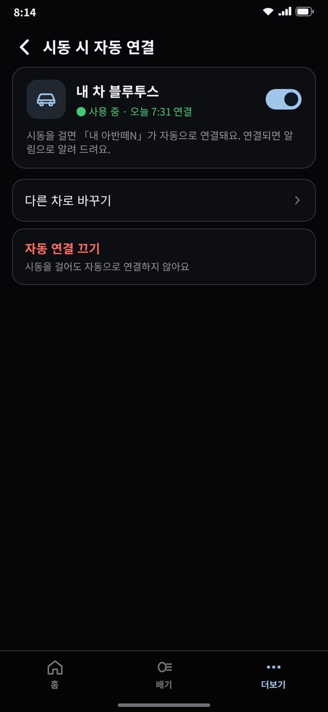
무선 등록
USB로 연결한 채 이름(영문 · 숫자 3~20자)과 숫자 4자리 비밀번호를 정하고 컨트롤러를 고르면 등록이 끝납니다. 비밀번호를 아는 폰만 연결됩니다.
여러 대 · 다시 등록
등록한 컨트롤러는 연결 화면에 카드로 남아 누르면 바로 연결됩니다. 이름 · 비밀번호 다시 정하기, 등록 삭제도 됩니다.
시동 시 자동 연결
폰이 차 블루투스(오디오 · 내비)에 붙으면 앱을 열지 않아도 컨트롤러에 연결하고 알림으로 알려 줍니다. 「자동 연결 시 앱 열기」로 앱까지 띄울 수 있습니다.
펌웨어 업데이트
무선으로 연결된 상태에서는 「USB 필요」로 알려 줍니다. 업데이트는 USB로 합니다.
앱을 안 열어도 한 번 터치로
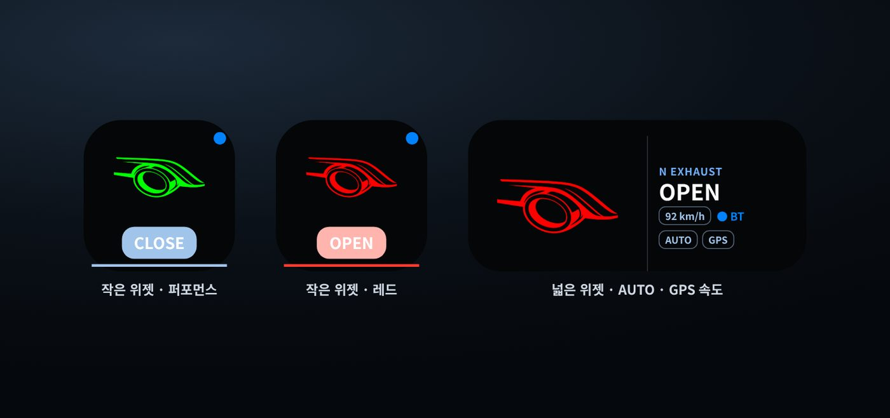
두 가지 크기
작은 위젯: 그림 · 모드 이름 · 연결 점
넓은 위젯: 모드 · GPS 속도 · BT · AUTO · GPS · 매너 표시
위젯 테마
퍼포먼스 · 레드 · 오렌지 · 블루 · 그레이 · 커스텀(배경 · 글자 · 글자 박스 · 엠비언트 색), 배경 투명도, 미리보기
상태 표시
연결 중 · 기다림 · 맞추는 중 · 검사 잠금(LOCK) · 터널 · 매너를 위젯에서 바로 보여 줍니다.
위젯 추가
메뉴 「위젯 추가」 또는 홈 화면을 길게 눌러 N Controller 위젯을 고르고, 컨트롤러와 테마를 정합니다.
시간 · 장소에 따라 알아서
상세 설정 › AUTO 모드에서 조건을 만들어 두면 앱이 모드를 자동으로 바꿉니다. 규칙마다 켜고 끄고 지울 수 있고, 「설정 저장」을 눌러야 적용됩니다.
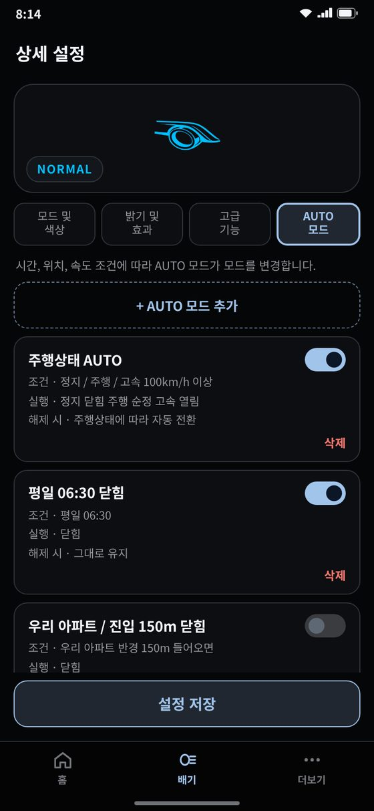
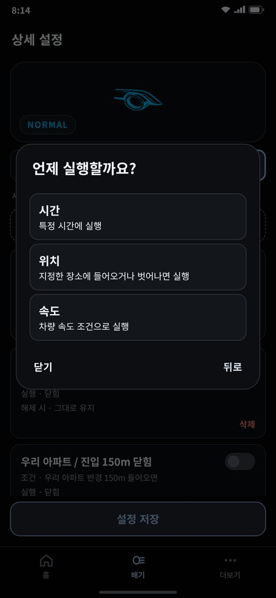
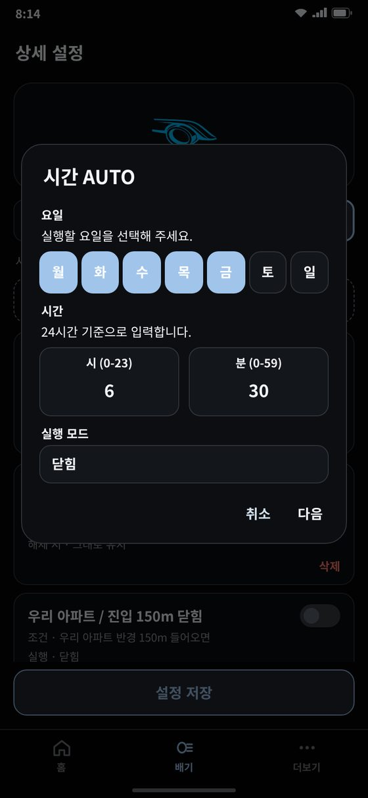
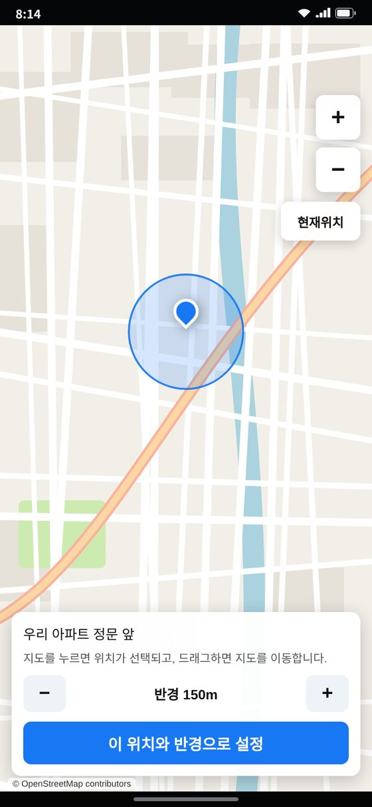
시간 AUTO
요일(매일 · 평일 · 주말 · 원하는 요일)과 시각(24시간)마다 순정 · 닫힘 · 열림으로
위치 AUTO
지도에서 고른 곳의 반경(50~1000m, 50m씩)에 들어오면(진입) 또는 벗어나면(이탈) 바꿉니다. 아파트 · 회사 주차장에 좋습니다.
확인하고 저장
만들기 전에 이름 · 조건 · 실행 · 해제 시를 한 번 더 보여 줍니다.
달리는 속도와 길에 맞춰
폰 GPS 속도로 판단합니다. 속도 조건은 하나만 쓸 수 있고, 세 가지 방식 중에서 고릅니다.
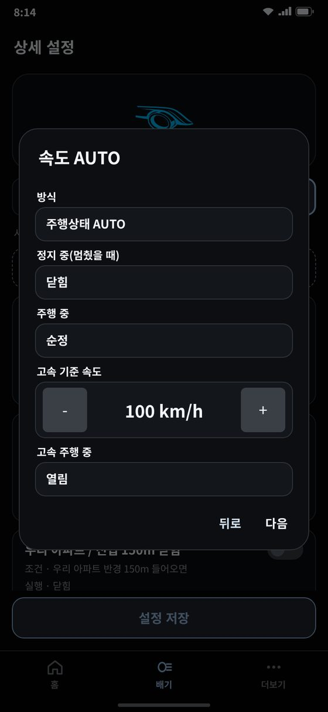
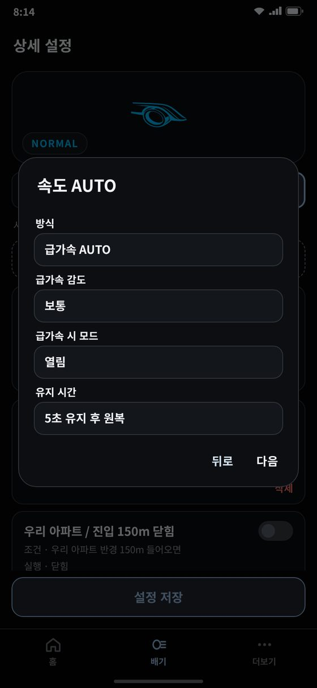
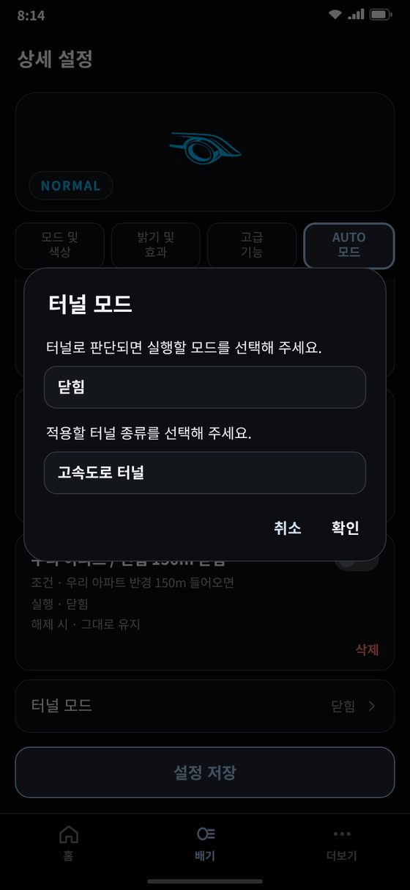
속도 AUTO
기준 속도(30~200km/h, 5씩)보다 빠를 때 · 느릴 때 바꾸고, 조건이 풀리면 정한 모드로 돌아가거나 그대로 둡니다. 「현재 모드 조건」을 걸면 그 모드일 때만 바꿉니다.
주행상태 AUTO
정지 중 · 주행 중 · 고속 주행 중(고속 기준 40~200km/h) 각각 모드를 정합니다.
급가속 AUTO
1초 안에 빨라진 정도로 판단합니다. 민감 7 · 보통 10 · 둔감 15km/h 또는 직접 입력. 3 · 5 · 8 · 10 · 15초 뒤 원래 모드로.
터널 모드
GPS가 끊기는 터널을 지도 데이터로 짐작해 고른 모드로 바꾸는 보조 기능. 전체 터널 · 고속도로 터널 · 자동차 전용+고속도로 터널 중 고릅니다.
지도 데이터 · 권한
처음 한 번 지도 데이터(약 60MB, Wi-Fi 권장)를 받으면 주행 중에는 통신하지 않습니다. 위치 「항상 허용」 · 정확한 위치 · 알림 · 배터리 「제한 없음」을 차례로 안내합니다.
어디서 무엇이 바뀌었는지 지도에
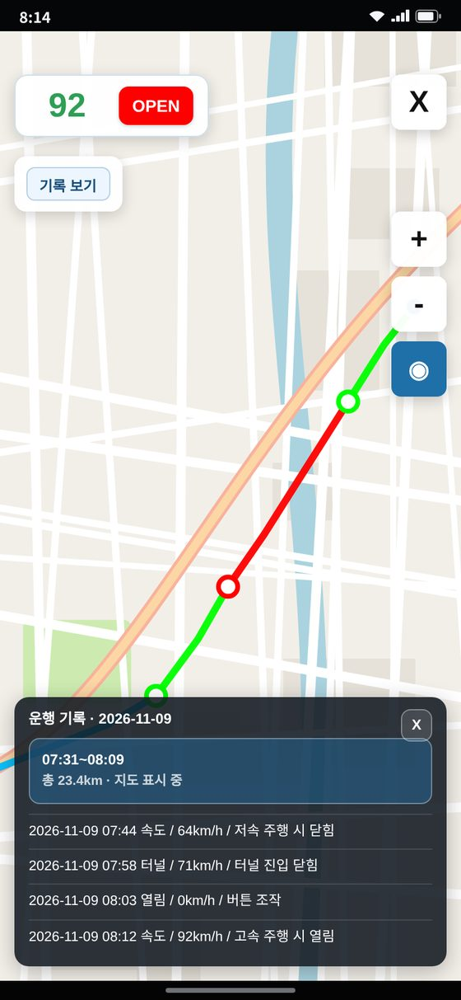
경로 · 모드 색
달린 길을 그때 모드 색으로 그리고, AUTO · 터널 · 버튼 조작으로 바뀐 곳을 표시합니다.
지금 상태
위쪽에 GPS 속도와 지금 모드. 모드 표시를 눌러 바로 바꿀 수 있습니다.
기록 보기
날짜 · 운행별로 보고, 속도 · 위치 · 시간 · 터널 · 조작 표시를 켜고 끕니다. 바뀐 곳을 누르면 시각 · 종류 · 속도가 나옵니다. 기록 삭제도 됩니다.
내 취향대로
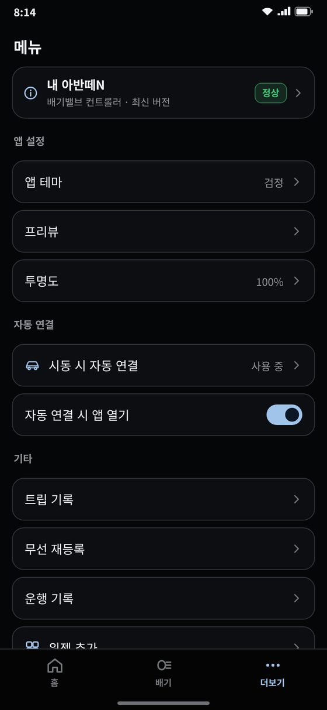
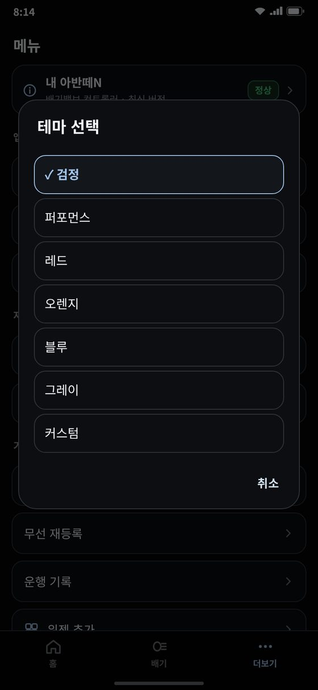
앱 테마
검정 · 퍼포먼스 · 레드 · 오렌지 · 블루 · 그레이 · 커스텀(배경 사진 · 박스 색 · 글자 색). 모드 색과 경고 색은 알아보기 쉽게 그대로 둡니다.
투명도 · 프리뷰
카드 투명도 30~100%. 프리뷰 박스 색과 그림(배기 로고 · N 로고). 위젯도 같은 그림을 씁니다.
그 밖
트립 기록 입력 · 초기화, 디바이스 정보(기기 · 사용자 · 펌웨어 · 사용 시간), 앱 업데이트, 문의하기(카카오톡 상담)
처음이어도 설명서 보고 설치
잭바이잭 설치
전용 배선을 커넥터에 꽂는 방식이라 DIY가 처음인 분도 설명서를 보고 설치합니다.
구매자 단톡방
차종별 작업 방법 · 설명서를 드리고 계속 업데이트합니다.
기기 등록 · A/S
등록된 기기는 점검 · 업데이트 · A/S 안내를 받습니다. 문의는 프로그램 · 앱의 「문의하기」(카카오톡 상담)로.
수제 제작
하나하나 직접 만들어 보내 드립니다. 주문이 밀리면 시간이 더 걸릴 수 있습니다.